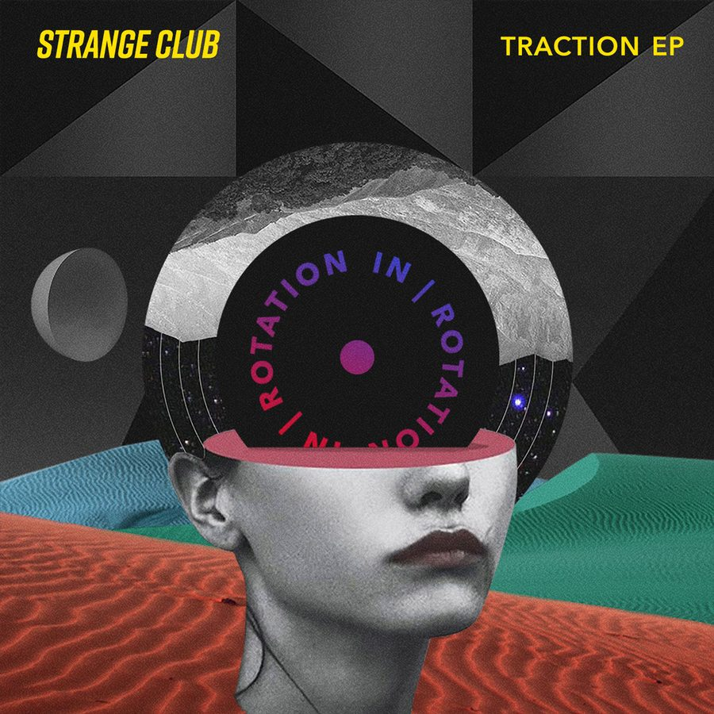

Strange Club Channels the Grit of Downtown L.A. on ‘Traction’ EP for IN / ROTATION


In their bio, Strange Club declares that Downtown Los Angeles is where everything started. It’s their home and inspiration, and everything their musical collective creates is a reflection of the “raw and honest vibe of their surroundings,” as they describe it.
“Downtown ties us all together, because it really is the fucking Wild West out here, and that’s what we are all searching for. This is where that shit is happening. We are inspired by Downtown—we love the grit. There’s a beauty in its darkness and an energy that is raw and palpable.”
However, what is interesting about the trio of Sabastion, Jeremiah, and Greg is that they all hail from different parts of the US and equally have backgrounds outside of producing dance music.
While Greg is a multi-instrumentalist from San Francisco, Sabastion comes from an earlier career DJing, producing events, and running an indie record label in New York. Meanwhile, Jeremiah is a studio expert and hardware connoisseur who hails from Chicago and is described by his comrades as the “missing piece of the puzzle.”
As the Strange Club vision comes together, both in terms of musical vision and accompanying live performance, the collective arrives on IN / ROTATION with their debut Traction EP. We had a chat with Sabastion to find out more about the Strange Club story.
Strange Club’s Traction EP is available here.
How is 2018 starting out for Strange Club?
We are doing very well. We were stoked at the end of the year with the plans we were making for the start the year. The Collective Zoo show with Chris Lake, Wax Motif, and others was an absolute ripper. They sold it out, I believe. Great crowd—a great show for us. We have been working a ton on live sampling and taking our mixing to the next level for DJ sets, so it was awesome to see it all come together. That show was a great way for us to start things off, following up with these two releases on a label we are stoked to be on. Life is good.
Tell us about your respective journeys leading to forming Strange Club.
I [Sabastion] moved to L.A. in 2015. Greg and I became super tight the moment we met; he’d also just moved to L.A. We were living on the Westside and were looking for a hood that we were more into, so we moved Downtown in late 2015. Greg built a studio in his loft apartment, which also doubles as the offices for his skincare company, Youth to the People. Greg and I basically spent every morning and night together, working in that studio. It’s on a street in the Arts District called Traction Ave, which is where we got the EP title from—it’s where all the shit went down.
Mid-2016, I was basically living at Greg’s place, and we met Jeremiah, who happened to live on the floor in the same building on Traction Ave. We invited him over a couple times after discovering he was into music. Turns out, Jeremiah isn’t just into music; he’s a fucking wicked producer and designer of studios. Naturally, we all became homies and started working together a bit in the studio. Jeremiah had an amazing studio built out in his apartment, and he has a collection of eclectic synths and outboard gear and vintage hardware that would make any producer drool.
Tell us about the process of forming the Strange Club sound.
Jeremiah is from Chicago. You can hear it in his sound; it’s in his blood. Greg is from the Bay Area and has that hip-hop, soulful swag to his production. I’m into all kinds of music and lend to the production style with an ear for what’s hot and what’s gonna appeal to a wider audience.
We love a wide variety of music. We pull a lot of inspiration from old Southern rap sometimes; sometimes it’s dark vampire music from a country we’ve never heard of; sometimes it’s pop; sometimes it’s classic house. When the energy is right, we know it.
You’ve delivered two fairly slamming tech house cuts for your debut on IN / ROTATION. Tell us a little of the story behind the two tracks that are featured on the EP.
“That Beat” has been to the moon and back, and we are real happy with where it ended up. We had a full female rap vocal over it at one point. One of the edits we made, we played at Sound at the House Heads party, and it went off. It’s got a rolling bassline and some old-school rave vibes that people kinda lost their shit to.
“Pablo”… I think we might have been watching Narcos at this moment in our lives. But we played this track at Splash House, and the reaction was really positive. Ultimately, the crowd is the judge and jury; the crowd will tell you if it’s a banger or not.
What’s up next for Strange Club?
Working on our live show is a main focus for us right now, which we will premiere at our next Strange Club event, Strange Club 03, this fall. The first two were wild. We have some exciting festivals coming up and a show with our homie Madeaux from Fool’s Gold in Hawaii in April. But focusing on releasing as much music this year as possible.
Follow Strange Club on Facebook | Twitter | SoundCloud
Follow IN / ROTATION on Facebook | Twitter | SoundCloud